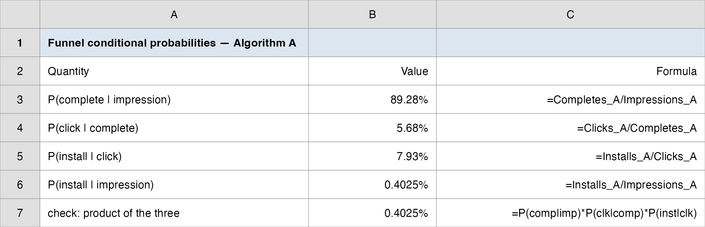
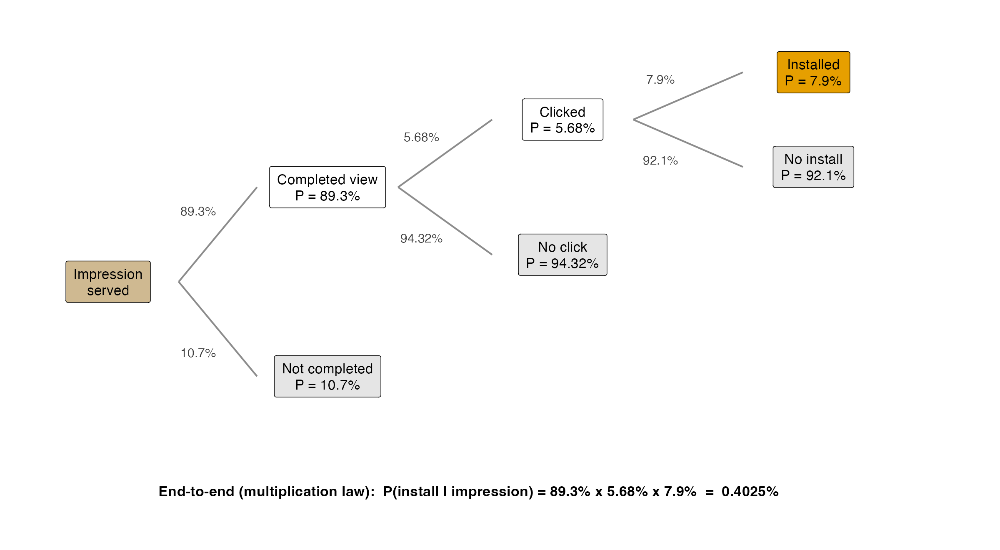
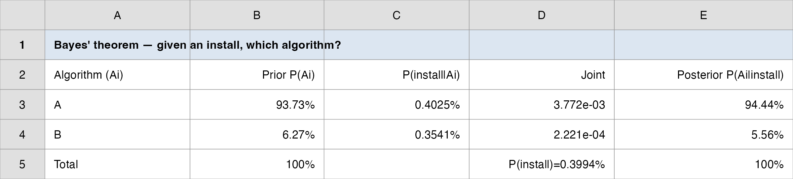
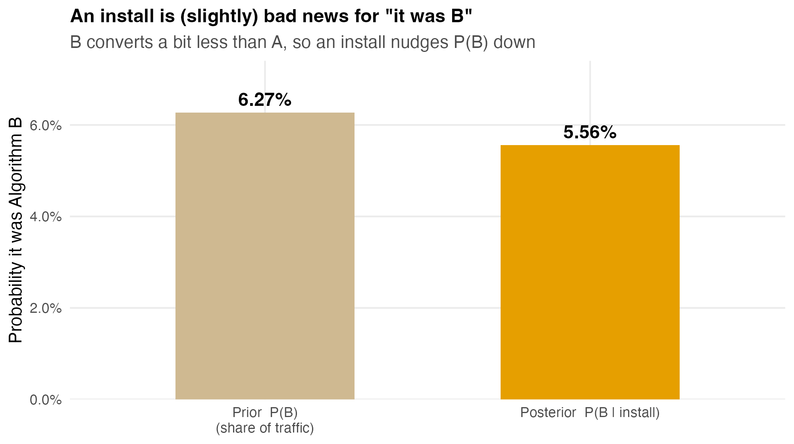
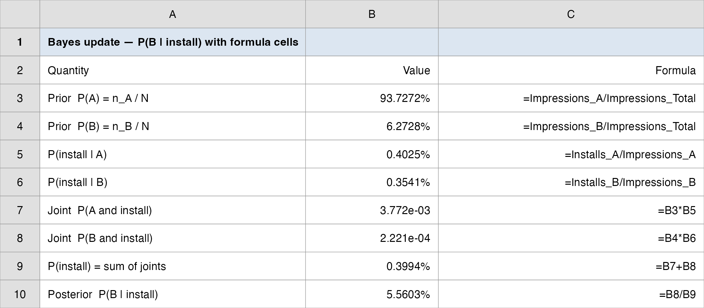

Probability
Vungle serves a 15-second video ad inside another app. Most of the time it earns money only when the viewer installs the advertised app.
Each impression travels a funnel: it can be watched to completion, then clicked, then turn into an install, and at every step most users drop off.
So every ad served is a small bet. The whole business is the probability that the bet pays off, and how that probability changes as the user moves down the funnel.
We carry the same June 2014 A/B dataset from before: 30 days, two algorithms (A and B), the full funnel counts in data/vungle_daily.csv.
“What is the chance a random impression ends in an install? And if we already know it was clicked, how does that chance change? Finally, we just recorded one install: how likely is it that it came from algorithm B?”
These three questions are the three pillars of probability: a marginal chance, a conditional chance, and a reverse (Bayes) chance.
How today’s studio runs: I demo each idea on the Vungle funnel (and a quick textbook anchor); we debrief what one install really tells you; then your group decides on a separate case posted to Brightspace.
Every probability concept today maps onto the funnel:
| Funnel question | The tool |
|---|---|
| List every outcome of “serve one ad” | Experiment, sample space, events |
| Chance a random impression installs | Marginal probability |
| Chance of install given a click | Conditional probability |
| Chain the funnel steps into one rate | Multiplication law |
| Given an install, was it A or B? | Bayes’ theorem |
A random experiment is any process whose outcome is not known in advance: serve one impression and watch what happens.
The sample space \(S\) is the set of all possible outcomes (the sample points).
An event is a collection of outcomes, a subset of \(S\).
| Term | “Serve one Vungle impression” |
|---|---|
| Experiment | Show one ad, follow it down the funnel |
| Sample space | \(S = \{\) no completion, completion-no-click, click-no-install, install \(\}\) |
| Event | \(I\) = “the impression installs” = one outcome in \(S\) |
\[ 0 \le P(E_i) \le 1 \qquad\qquad \sum_{i=1}^{n} P(E_i) = 1 \]
Near 0 = almost impossible; near 1 = almost certain.
Where do the numbers come from? Three methods:
Vungle is a relative-frequency shop: 30 days of counts give us all our probabilities.
| Relationship | Meaning | Formula |
|---|---|---|
| Complement | “\(A\) does not happen” | \(P(A^c) = 1 - P(A)\) |
| Union | “\(A\) or \(B\) (or both)” | \(P(A \cup B) = P(A) + P(B) - P(A \cap B)\) |
| Intersection | “\(A\) and \(B\) together” | \(P(A \cap B)\), the joint probability |
| Mutually exclusive | \(A\) and \(B\) cannot co-occur | \(P(A \cap B) = 0 \Rightarrow P(A \cup B) = P(A) + P(B)\) |
Complement, on the funnel: if \(P(\text{install}) = 0.40\%\), then \(P(\text{no install}) = 99.60\%\). Most bets lose; that is the ad business.
The addition law subtracts the overlap so you don’t double-count it: a customer who buys both the DVD and the HDTV is counted once in “DVD or HDTV.”
A retailer logs 100 customers by TV type bought and whether they also bought a DVD player. The body holds joint counts; the margins hold marginal totals.
| Regular | Flat Screen | HDTV | Total | |
|---|---|---|---|---|
| No DVD | 20 | 10 | 10 | 40 |
| Bought DVD | 5 | 25 | 30 | 60 |
| Total | 25 | 35 | 40 | 100 |
\[ P(A \mid B) = \frac{P(A \cap B)}{P(B)} \]
Intuition: \(B\) becoming known shrinks the sample space to just the \(B\) outcomes; you re-weigh \(A\) inside that smaller world.
On the contingency table: \(P(\text{DVD} \mid \text{HDTV}) = \dfrac{30/100}{40/100} = \dfrac{30}{40} = 0.75\): restrict to the 40 HDTV buyers, then ask how many bought a DVD.
The whole Vungle funnel is nothing but a chain of conditional probabilities.
| Step | Conditional probability | Value |
|---|---|---|
| Watched to completion | \(P(\text{complete} \mid \text{impression})\) | 89.28% |
| Clicked, given completed | \(P(\text{click} \mid \text{complete})\) | 5.68% |
| Installed, given clicked | \(P(\text{install} \mid \text{click})\) | 7.93% |
| Installed overall | \(P(\text{install} \mid \text{impression})\) | 0.4025% |

\[ P(A \cap B) = P(B)\, P(A \mid B) = P(A)\, P(B \mid A) \]
\[ \underbrace{P(\text{install} \mid \text{imp})}_{0.4025\%} = \underbrace{P(\text{comp} \mid \text{imp})}_{89.28\%} \times \underbrace{P(\text{click} \mid \text{comp})}_{5.68\%} \times \underbrace{P(\text{install} \mid \text{click})}_{7.93\%} \]
\[ P(A \mid B) = P(A) \quad\Longleftrightarrow\quad P(A \cap B) = P(A)\,P(B) \]
Funnel test: is clicking independent of completing? Compare \(P(\text{click} \mid \text{complete}) = 5.68\%\) with the unconditional click rate \(P(\text{click} \mid \text{impression}) = 5.07\%\). They differ → not independent: completing the video makes a click more likely. That is why the funnel must be modeled with conditional, not marginal, probabilities.
Warning: do not confuse with mutually exclusive. Mutually exclusive events with nonzero probability are the opposite of independent: if one happens the other cannot, so knowing one is maximally informative.
No ToolPak tool needed: probabilities are just ratios of SUMIF totals.
=SUMIF(algorithm,"A",impressions) → \(n_A\)=SUMIF(algorithm,"A",installs) → \(x_A\)This is the workhorse move of funnel analytics: every rate is a divided pair of cells.

The funnel runs forward: given the algorithm, what is the install rate? Bayes runs it backward: we just saw an install, which algorithm produced it?
We flip the conditioning: we know \(P(\text{install} \mid \text{algorithm})\), we want \(P(\text{algorithm} \mid \text{install})\).
The ingredients:
\[ \text{Prior} \;\xrightarrow{\;\text{new information}\;}\; \text{Posterior} \]
\[ P(A_i \mid B) = \frac{P(A_i)\,P(B \mid A_i)}{\displaystyle\sum_{j=1}^{k} P(A_j)\,P(B \mid A_j)} \]
The numerator is one joint probability \(P(A_i \cap B) = P(A_i)\,P(B\mid A_i)\) (the multiplication law).
The denominator is \(P(B)\), the sum of all the joints, by the total probability rule.
So Bayes is just: (this path’s joint) ÷ (total of all joints). A table does the bookkeeping.
A bank’s new product has three possible fates. Priors from past launches: \(P(\text{Failure}) = 0.80\), \(P(\text{Marginal}) = 0.15\), \(P(\text{Major success}) = 0.05\). A test market then returns a large share. How likely is each fate now?
| Outcome \(A_i\) | Prior \(P(A_i)\) | Likelihood \(P(\text{Large}\mid A_i)\) | Joint | Posterior \(P(A_i\mid\text{Large})\) |
|---|---|---|---|---|
| Failure | 0.80 | 0.02 | 0.0160 | 0.0160 / 0.1010 = 0.158 |
| Marginal | 0.15 | 0.24 | 0.0360 | 0.356 |
| Major success | 0.05 | 0.98 | 0.0490 | 0.0490 / 0.1010 = 0.485 |
| Total | 1.00 | $P() = $ 0.1010 | 1.000 |
A large test result lifts “Major success” from a 5% prior to a 49% posterior (nearly ten-fold): the same evidence that costs a few thousand to gather swings the launch decision from “no” to “go.”
Evidence: we recorded one install. Question: \(P(B \mid \text{install})\)?
Prior = each algorithm’s share of impressions (the 1/16 hash split sends most traffic to A):
\[ P(A) = \frac{236.5\text{M}}{252.3\text{M}} = 93.73\% \qquad P(B) = \frac{15.8\text{M}}{252.3\text{M}} = 6.27\% \]
\[ P(\text{install} \mid A) = 0.4025\% \qquad P(\text{install} \mid B) = 0.3541\% \]


The whole update is five formula cells:
Master this layout: it is the template for every Bayes problem.

| Question | Type | Answer |
|---|---|---|
| Chance a random impression installs | Marginal | 0.40% |
| Chance of install given a click | Conditional | 7.93% |
| Given an install, chance it was B | Bayes (reverse) | 5.56% |
The unconditional install rate (0.40%) makes every ad look like a near-certain loss. But the conditional rates tell the real operational story:
So where should Vungle spend? On the steps with the steepest conditional lift: getting users to complete and click, because everything downstream is conditioned on them.
This is the bridge to the next topics: those conditional rates become the parameters of probability models (a click is a Bernoulli trial with \(p \approx 5\%\)).
One sentence: every funnel rate is a conditional probability, the end-to-end install rate is their product, and Bayes lets you read the funnel backward, from an observed install to the likely algorithm.
One number to remember: 0.40%, the marginal install rate, and how a single click multiplies it 20-fold to 7.93%.
One caveat: an install is weak evidence about which algorithm served it (\(P(B\mid\text{install}) = 5.56\%\) vs. a \(6.27\%\) prior); base rates dominate, so never read a posterior off the likelihood alone.
Practice with the real data: data/vungle_daily.csv + SUMIF → reproduce the funnel rates; data/vungle_probability.xlsx holds the worked funnel and Bayes tables.
Now it’s your group’s turn. Today’s in-class group case is posted on Brightspace (Topic 03 Group Case): a separate business decision you make with today’s tools.
What you’ll use: probability rules, conditional probability, and Bayes. Excel: Analysis ToolPak (probabilities are SUMIF ratios and a small Bayes table).
Submit one PDF per group before you leave: your decision plus the numbers behind it.
Some key takeaways from this session:
Business Analytics